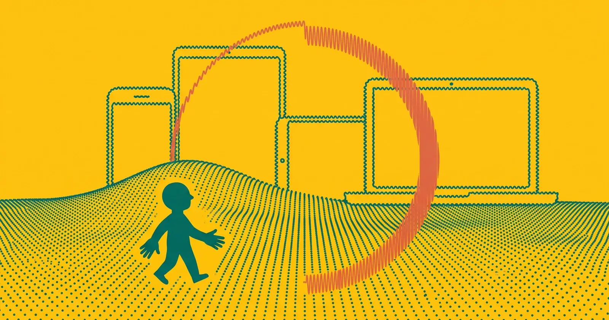
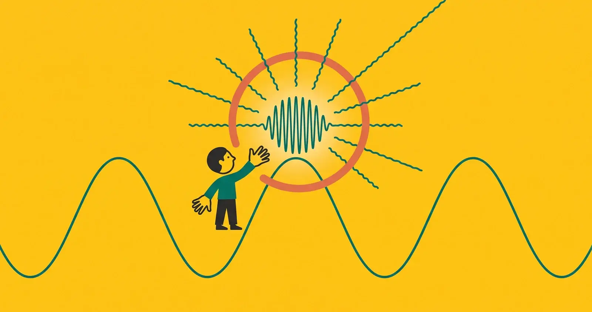
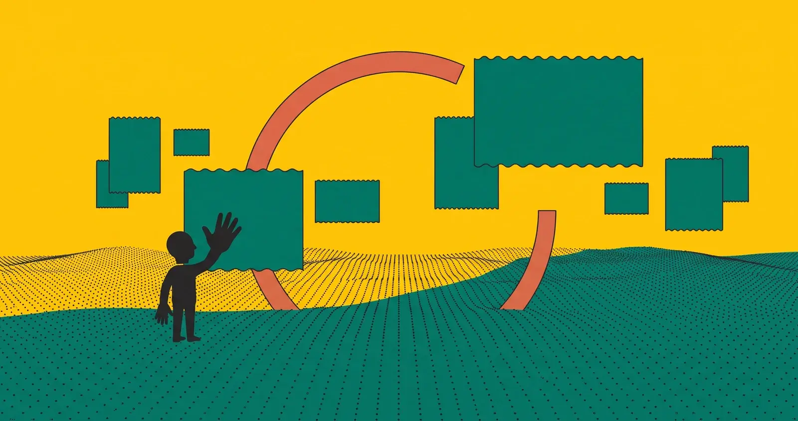
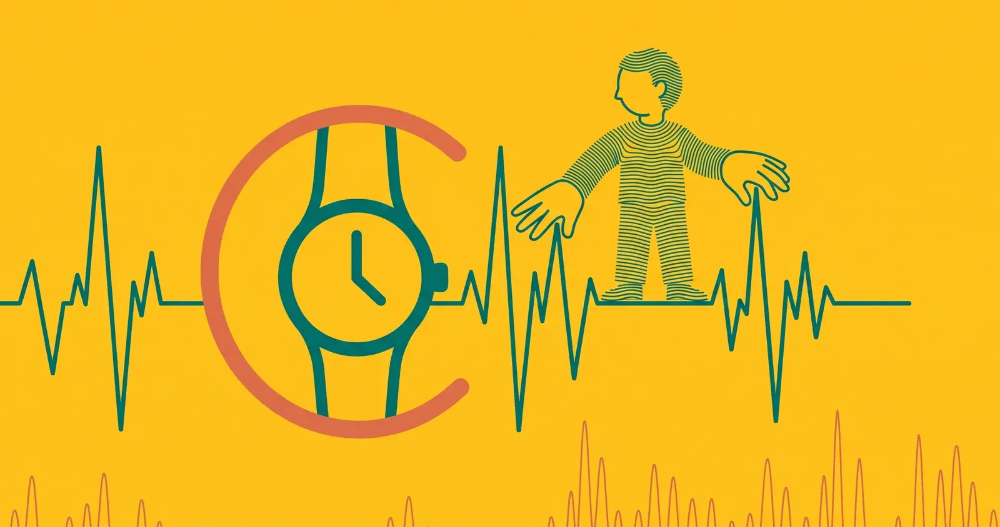
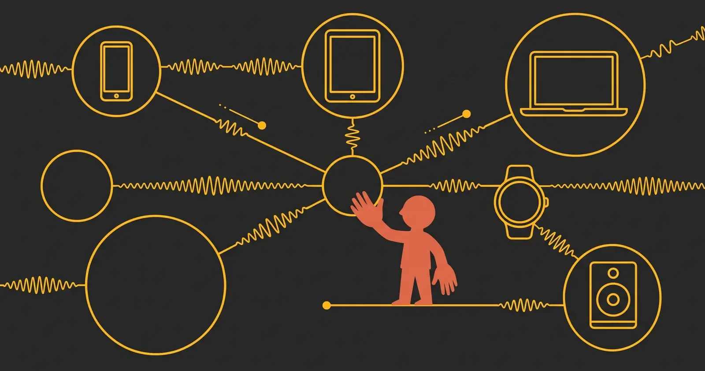
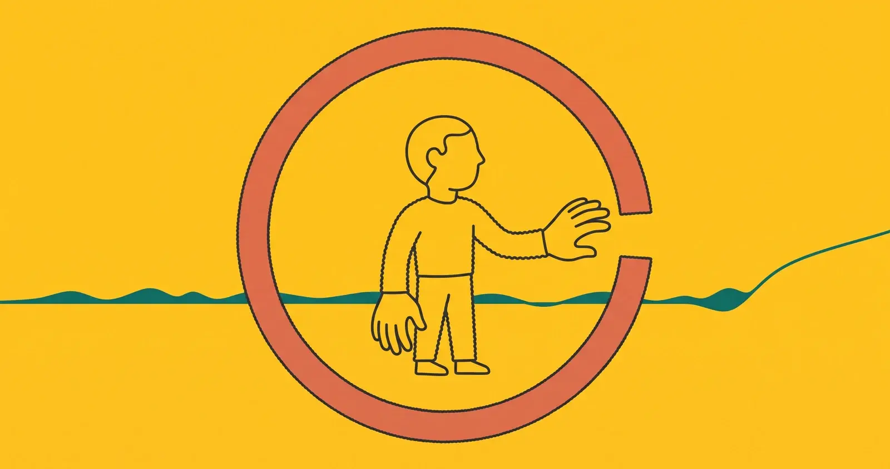

Browse by topic
What changes, area by area
Macro-areas to read the event from the point of view of those who'll use these tools in the coming months.

01
Operating systems
The new iOS, iPadOS and macOS releases
61 articles

02
Apple Intelligence and Siri
Apple Intelligence and the new Siri
62 articles

03
Developers
Xcode, Swift and the tools for those who build
34 articles

04
Design and interfaces
The visual language and interfaces
22 articles

05
Spatial computing and visionOS
visionOS and spatial computing
13 articles

06
Health and wellbeing
Health, fitness and watchOS
6 articles

07
Services and ecosystem
iCloud, Continuity and the ecosystem
48 articles

08
Privacy and security
Privacy and security
18 articles